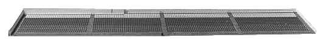
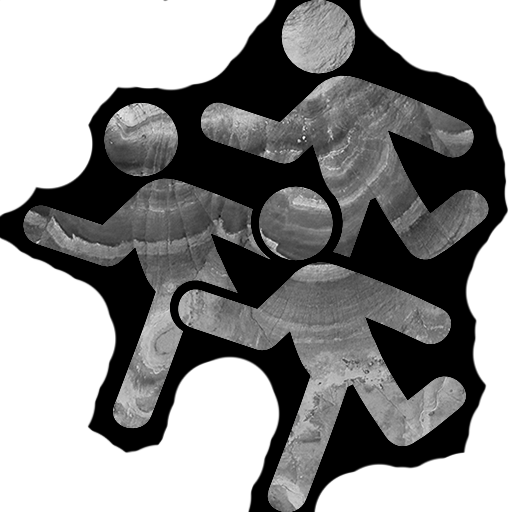
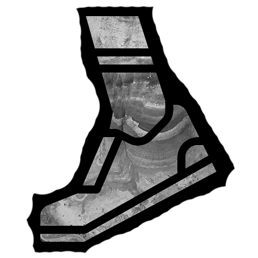
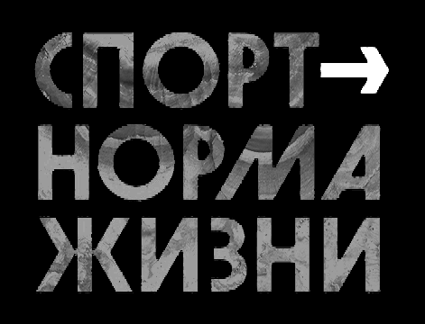
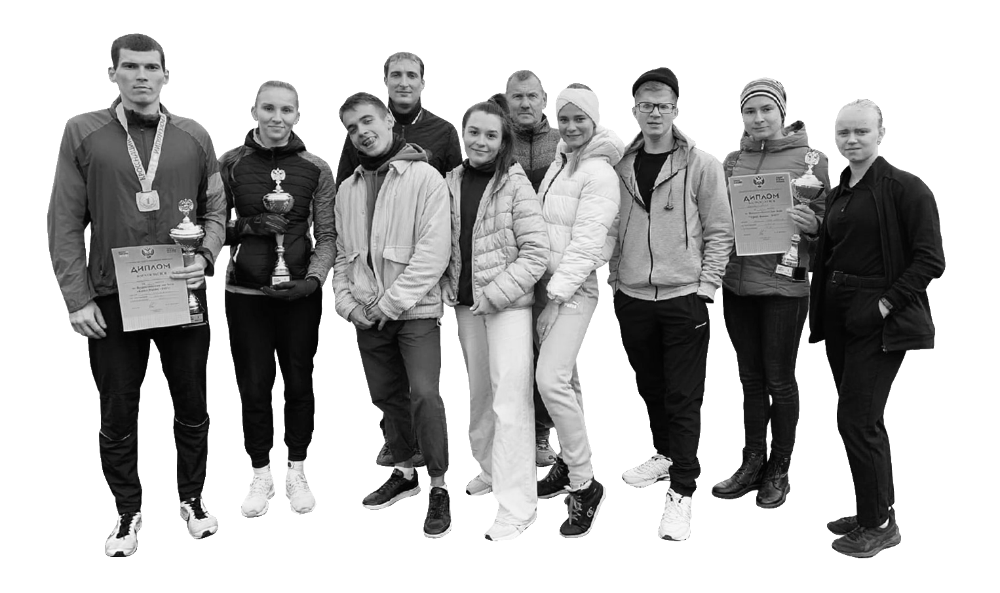

КРОСС НАЦИИ
#
ДА ЗДОРОВ
ВЕСЕЛ
КРИСТИНА БАКУРСКАЯ / 18.09.2021
ИВАНОВСКИЙ
ГОСУДАРСТВЕННЫЙ
УНИВЕРСИТЕТ
2021 STUDENЬ
    
18 СЕНТЯБРЯ В 2021 ГОДУ
Прошёл всероссийский день бега «Кросс нации» – самое массовое
и масштабное спортивное мероприятие на территории России как
по количеству участников, так и по географическому охвату.
В Ивановской области мероприятие было организовано в
Кинешме на территории ДЮСШ «Волжанин».
Министерство спорта, туризма и молодежной
политики РФ, ФГУ «Управление спортивных
мероприятий», Всероссийская федерация легкой
атлетики, а также органы исполнительной власти в
области физической культуры и спорта субъектов РФ.
В настоящее время отличительной особенностью «Кросса нации»
является то, что он носит массовый характер, очень демократичен,
общедоступен и рассчитан на людей разных возрастов и с разной
физической подготовкой
Организаторами этого массовго забега выступают
Соревнования проходят в два этапа
Первый этап – соревнования непосредственно в
российских регионах, победители и призеры
которого принимают участие в финальном кроссе
– Гран-при, проходящем в Москве спустя неделю
после завершения первого этапа. Все победители
награждаются призами и подарками, а всем
участникам вручают сувенирную продукцию.
Как таковых правил у «Кросса нации» практически нет
Эту возможность испытать себя не упустили студенты ИвГУ
Среди которых: Алексей
Фетистов, Виктория Цыплова,
Злата Шаршакова и Кристина
Бакурская. Для большинства из
ребят дистанция была
непрофильной. Однако же для
каждого из легкоатлетов этот
кросс стал хорошим подспорьем
на текущем этапе подготовки к
межвузовским соревнованиям.
Благодаря грамотной психологической подготовке и
дружественной атмосфере в команде спортивная
делегация ИвГУ вернулась с мероприятия не с
пустыми руками. Серебряным призёром стала
Кристина Бакурская на дистанции 2400 м среди
женщин 1999-2003 гг. рождения.
Выражаем благодарность организаторам
«Кросса нации» в Кинешме и тренерам ИвГУ
по лёгкой атлетике Наталье Сергеевне
Майоровой и Елене Борисовне Сафоновой.
Ребят сопровождал тренер легкоатлетической сборной ИГСХА
Виталий Александрович Дряннов. Именно он создавал позитивный
настрой своим подопечным спортсменам перед стартом
В отличие от других видов бега, которые
жестко регламентированы официальными
правилами ИААФ, здесь это в основном
рекомендации. Предусмотрено несколько
дистанций: трассы длиной от 1 до 12 км, где
каждый участник выбирает свою группу с
нужной дистанцией – в зависимости от
возраста и своих возможностей.
Но, прежде всего, «Кросс нации» – это массовое и общедоступное
спортивное мероприятие, где каждый желающий может проявить
свои спортивные таланты, с пользой провести время, активно
отдохнуть с семьей и друзьями, а также стать участником
соревнований общероссийского уровня. Для этого нужно
предварительно пройти регистрацию на сайте и быть жителем ИО.
Его основная цель – агитация здорового образа
жизни и привлечение к занятиям физической
культурой россиян, прежде всего молодежи, а
также объединение всех жителей большой и
многонациональной страны в одном общем,
ярком событии. Забеги проводятся ежегодно,
начиная с 2004 года, в сентябре, обычно в
субботу или воскресенье.
На старт выходят все желающие: профессиональные спортсмены,
олимпийские чемпионы, ветераны спорта, государственные
чиновники, дети, студенты и даже люди с ограниченными
возможностями. В нем принимают участие сотни тысяч россиян по
всей стране. А участие в забеге видных политических и общественных
деятелей привлекает к нему больше внимание и вызывает интерес.

2021 STUDENЬ

КРИСТИНА БАКУРСКАЯ
kineshemec.ru
/ 18.09.2021
ФОТО СТАДИОНА ВЗЯТО С:
ИВАНОВСКИЙ
ГОСУДАРСТВЕННЫЙ
УНИВЕРСИТЕТ